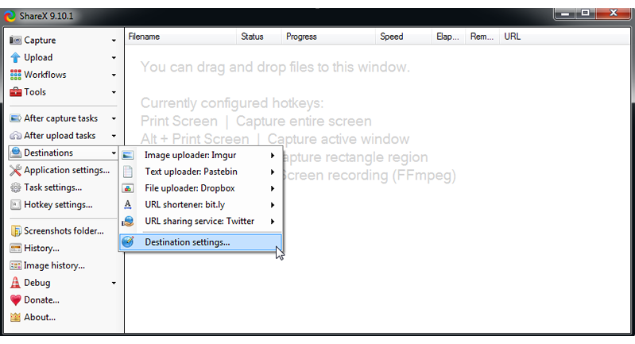
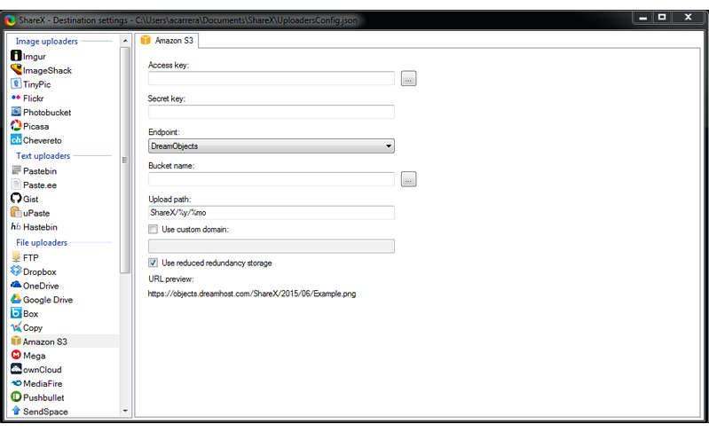
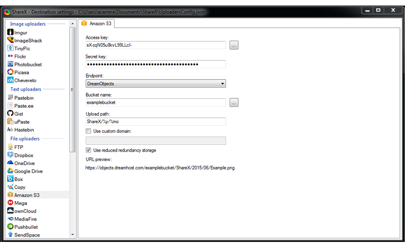
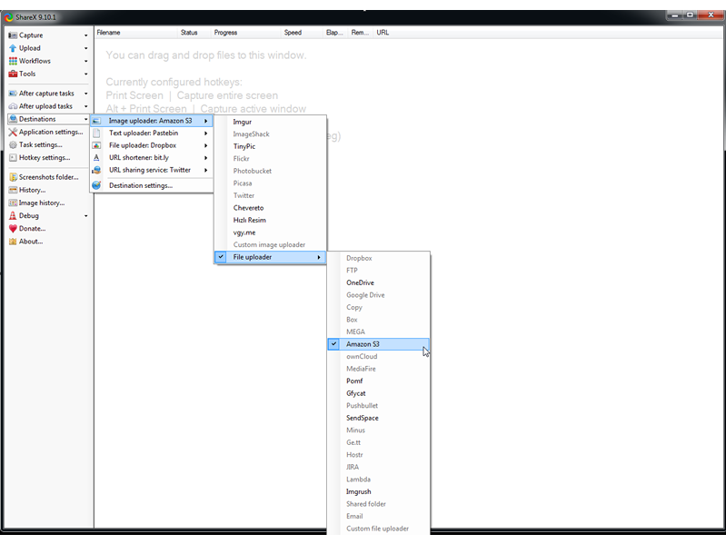

How to Use ShareX with DreamObjects
Overview
ShareX is a free and open source Windows application that you can use for taking screenshots and then sharing them with others. Starting with version 9.0.0, you can easily upload screenshots to DreamObjects. ShareX takes advantage of the S3 API compatibility of DreamObjects to allow it to be configured as a destination.
Setting up ShareX with DreamObjects
Launch ShareX.
On the left, click the ‘Destinations’ menu item and then select ‘Destination settings...’
From the Destination Settings option, scroll down to the ‘File Uploaders’ section.
Select ‘Amazon S3’.
Select ‘DreamObjects’ from the ‘Endpoint’ dropdown in the main window.
Enter the Access key and Secret key in the selected fields
To route the destination of the screenshots and other information to DreamObjects, return to the ‘Destinations’ folder option within SharedX.
Select the ‘Image uploader’ > ‘File uploader’ > ‘Amazon S3’ option as shown in the above screenshot.
Repeat the previous step to enable Text and File uploads.